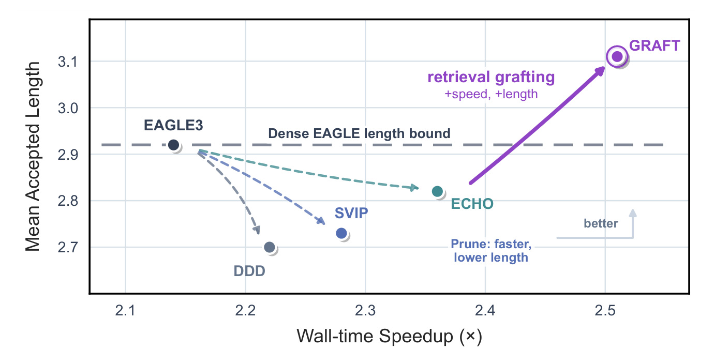
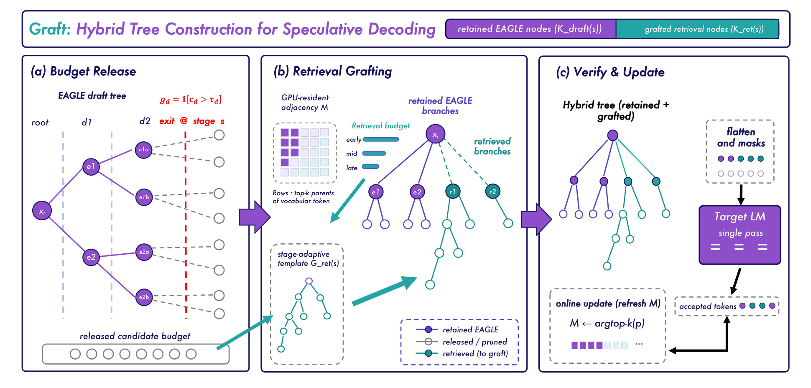
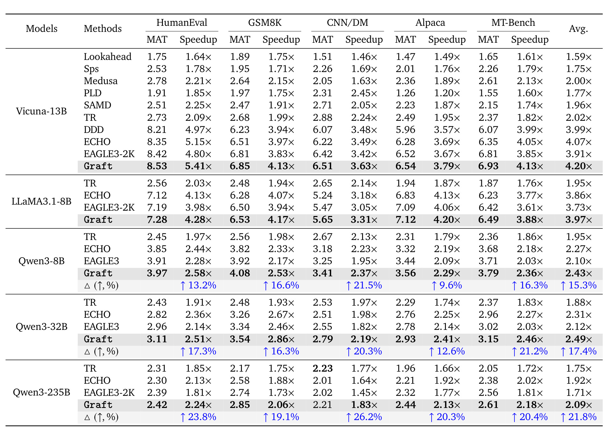
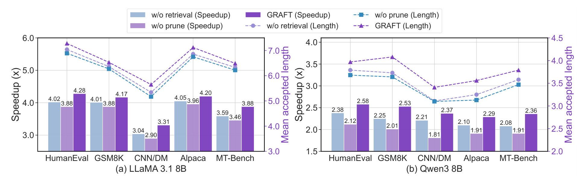

Graft：Draft Less, Retrieve More: Hybrid Tree Construction for Speculative Decoding
这里精读一篇最近公开的论文《Draft Less, Retrieve More: Hybrid Tree Construction for Speculative Decoding》。中文可以叫《少草稿、多检索：面向投机解码的混合树构造》。
论文链接：https://arxiv.org/abs/2605.20104
PDF：https://arxiv.org/pdf/2605.20104
作者：Yuhao Shen, Tianyu Liu, Xinyi Hu, Quan Kong, Baolin Zhang 等
机构/团队：Zhejiang University / Alibaba Qwen
公开日期：2026-05-19，来源：arXiv cs.LG / cs.AI，arXiv ID：2605.20104。
代码/项目页：摘要未给出代码链接，本轮未核验到独立项目页。
0. 导读
Graft 值得看，因为它没有继续把投机解码理解成“草稿模型越强越好”，而是重新分配草稿树预算。传统方法为了提高 accepted length，会构造更大的 draft tree，但大树带来显存带宽和验证开销；动态剪枝能省预算，却会丢掉潜在可接受候选。Graft 的想法是，剪枝释放出的槽位不要浪费，改用检索到的高预测 token 填进去。这个“prune-then-graft”把检索和投机解码结合得很自然。
这篇论文和每日关注范围的关系很直接：它不是孤立的模型技巧，而是围绕推荐、检索、RAG、Agent 或大模型服务链路里的真实约束展开。下面按问题、方法、图表、实验和工程判断展开。
1. 背景与问题
投机解码的目标是在保持目标模型输出分布不变的前提下，让一次 target verification 接受多个 token。树越大，理论覆盖越好，但 draft-side 计算、KV/cache 访问、target verification 都会上升。固定树在不同 query 上缺乏自适应，尤其长上下文里低置信度分支会浪费更多资源。
现有剪枝方法解决了成本问题，却牺牲了 candidate coverage。Graft 观察到剪枝不是单纯删除，而是释放资源。释放出来的候选槽位可以用检索信号补充，而检索候选来自上下文、已验证树节点和 GPU-resident adjacency matrix，具有较低构造开销。
对推荐系统工程来说，这篇论文有额外启发：在召回/排序系统里，预算常被固定分配给某一类候选，Graft 的思想类似“先砍掉低置信候选，再把预算转给高命中检索候选”。这和多路召回、重排候选融合的资源调度问题非常接近。
更抽象地看，论文要回答的是一个资源分配问题：在模型能力、上下文信息、候选预算、延迟预算或业务约束都有限时，怎样把计算放到最有价值的位置。这个问题和推荐系统里的召回预算、排序链路、广告出价、用户长期价值建模是一类问题，只是本文落在 LLM 推理 场景。
2. 核心方法
Graft 的第一部分是 dynamic-depth pruning。系统根据 draft tree 分支置信度决定在哪个 stage 退出，保留高置信节点，剪掉低价值节点。这样可以减少 draft-side search 与验证负担，但会留下空出来的 candidate budget。
第二部分是 retrieval grafting。Graft 维护 GPU-resident adjacency matrix，保存 vocabulary token 的 top-k successor 候选。剪枝释放出的预算被分配给 retrieval branch，把高预测检索 token 嫁接到草稿树空位中。由于检索构建可以和树草稿并行，论文称其近乎零额外开销。
第三部分是 hybrid tree verification。目标模型仍按原投机解码规则验证混合树，接受最长有效路径；因此方法是 lossless，不改变目标模型最终采样分布。若检索节点被接受，系统还能用验证信息更新 adjacency matrix，让后续检索更贴近当前上下文。
Graft 的核心不是单个模块，而是两个模块的互补关系：只剪枝会丢覆盖，只检索但不自适应预算又会挤占草稿树；剪枝释放预算，检索补偿覆盖，这才形成新的 Pareto frontier。
我在阅读时更关注模块之间的接口，而不只是模块名称。本文的共同特点是：把原本隐含在工程经验里的决策变量显式化，例如阈值、预算、缓存、维度、控制信号或刷新间隔。显式化之后，系统才有可能被校准、复现、迁移和线上监控。
3. 图表解读

图 1 展示 wall-time speedup 与 mean accepted length 的权衡。传统 pruning 点更快但 accepted length 较低，dense EAGLE 有更高长度上限但更慢；Graft 位于更好的右上区域，说明它不是只牺牲质量换速度，而是同时改善速度和 accepted length。

图 4 是整体框架。左侧剪掉低置信 draft tree 节点，中间用 retrieval template 和 adjacency matrix 补位，右侧交给目标 LM 单次验证并在线更新。这个图最重要的是预算守恒：总 candidate budget 不变，只是从低价值 draft 分支迁移到检索分支。

表 1 是短上下文主结果。Graft 在 Vicuna、LLaMA3.1、Qwen3-8B/32B/235B 上多数指标领先，Qwen3-235B 这种大模型上相对 EAGLE3 平均加速提升更明显，说明混合树在强模型、困难 speculation 场景里仍有空间。

图 5 是组件分析。去掉 retrieval 或去掉 prune 都会损失速度或 accepted length，完整 Graft 同时保留两者优势。它证明核心贡献不是“检索能加速”，而是检索必须和置信剪枝形成预算闭环。
4. 实验与结果
论文覆盖短上下文 HumanEval、GSM8K、CNN/DM、Alpaca、MT-Bench，以及长上下文 QMSum、GovReport、MultiNews、LCC、RepoBench-P 等任务。短上下文加速比从 1.83x 到 5.41x；在 Qwen3-235B 上，相对 EAGLE3 平均加速提升最高 21.8%。长上下文设置中，Graft 在 LLaMA3.1-8B 上达到 3.22x 平均 decoding speedup，并在 Qwen3-14B 上超过 EAGLE3-64K。
这些结果的边界也要看清。论文报告的指标主要证明当前问题定义下的方法有效，但并不等价于所有生产链路都会得到同等收益。尤其是推理系统论文要区分 decoding time、end-to-end latency 和服务端吞吐；RAG/Agent 论文要区分 benchmark score、真实用户满意度和长期维护成本；工业推荐/平台论文要区分离线回放、短期 A/B 和长期生态影响。
5. 我的理解
我认为 Graft 对 LLM 推理系统的价值在于，它把“检索”从 RAG 语义层推进到了 decoding candidate 层。过去我们常说检索增强生成，是在 prompt 或 evidence 层面增强；Graft 则把局部 token 后继关系作为可检索对象，直接影响 speculative tree。这个思路对代码补全、长文档生成和模板化业务对话尤其有意义，因为这些场景重复短语、实体和局部模式很多。
从研究脉络看，这类工作共同说明一个趋势：大模型和推荐系统都在从“单模型效果”走向“系统级可控”。以前我们常把模型能力看成主要变量，现在越来越多论文开始处理部署预算、缓存策略、风险校准、候选预算、跨城市迁移、长期状态记忆等问题。这些问题不一定在排行榜上最耀眼，却更接近真实业务系统里的主要瓶颈。
6. 工程启发与复现建议
复现可以从 EAGLE3 或同类投机解码实现入手，先实现动态剪枝阈值，再增加一个轻量 successor cache。需要记录每轮 verification 中 accepted/rejected 节点，用来更新 adjacency matrix。最小实验建议先在 HumanEval 或 CNN/DM 上跑小模型，观察检索分支的命中率和构造延迟；随后再迁移到长上下文 code/document 任务。部署时要重点看 batch size 下检索构建是否仍能和 drafting 并行，否则论文中的近零额外开销可能被服务框架吞掉。
如果要把这篇论文纳入自己的技术栈，我建议先做最小闭环，而不是一次性复现全部实验。先找到一个可观测的瓶颈指标，再实现论文中最核心的决策变量，最后用分桶指标看收益是否来自目标机制。只有当收益在关键分桶上成立，才值得继续投入完整系统实现。
7. 局限与风险
- 检索分支质量依赖上下文重复性，开放式创作或高温采样下可能不如代码、摘要任务有效。
- 阈值与 template 深宽配置需要校准，跨模型和跨任务能否稳定复用仍需更多线上 evidence。
- 论文强调 decoding speedup，但服务端总延迟还包含 prefill、排队和 batch 调度，实际收益可能被稀释。
- GPU-resident adjacency matrix 有额外内存占用，超大词表或多模型混部时需要评估。
- lossless 保证来自目标模型验证，但高温随机采样下 accepted length 和检索命中会波动，P99 延迟仍可能不稳定。
8. 后续跟进
- 查看是否发布代码或 SGLang/vLLM 集成版本。
- 在代码补全和搜索 query suggestion 场景测试 token-level retrieval grafting。
- 比较 Graft 与 RASD、DFlash、EAGLE3 的组合空间。
- 针对中文长文本和电商模板内容构建 successor cache，评估重复模式带来的加速潜力。
9. 精读补充：与检索系统的连接
Graft 最有意思的地方，是把检索从“取外部知识”变成“填补 token 候选树”。这对推荐系统工程很有启发。推荐召回链路里，多路召回经常固定配额，例如协同过滤给多少、语义召回给多少、热门召回给多少。Graft 的预算逻辑提醒我们，配额不应该静态分配：当某一路低置信时，应把预算让给另一路；当检索分支在当前上下文里更可能命中时，就用它补足候选覆盖。这个思想可以迁移到 query suggestion、搜索补全、商品标题生成和会话推荐解释生成。
复现时要特别关注 retrieval source。论文中的 adjacency matrix 来自上下文和验证过程中目标模型产生的后继分布，它不是普通向量检索。如果直接用文本相似度或 BM25 替代，可能无法达到 token-level 的低延迟和高命中。一个可执行的最小实验是：对代码补全任务维护 (prefix_token -> top successor tokens) 的局部后继表，比较它和 draft model 分支的 accepted length。若后继表在局部上下文中命中高频标识符、API 名和缩进模板，就能看到 Graft 思路的优势。
工程上还要拆分三类成本：draft tree 构造成本、retrieval graft 构造成本、target verification 成本。论文强调检索构建可并行，因此近乎零额外开销；但在真实 serving 框架中，线程池、GPU kernel、CPU cache locality 和 batch scheduler 都可能打破这个假设。特别是在高 batch 场景下，不同请求的检索候选表会竞争内存带宽，检索分支的边际成本可能随并发上升。做线上评估时不能只看单请求 speedup，必须看每张 GPU 每秒完成请求数和 P99。
Graft 的失败模式也值得提前设计诊断。若剪枝过早，检索分支会承担过多候选，accepted length 可能下降；若剪枝过晚，释放预算不足，检索补偿发挥不出来；若检索模板过深或过宽，可能引入低概率后继，增加验证负担。比较好的监控指标包括每轮 retained draft nodes、retrieved nodes、retrieved accepted ratio、平均 accepted length、verification waste ratio。只有这些指标同时改善，才能说明 Graft 的“剪枝释放预算 + 检索补偿覆盖”机制真的起作用。
10. 失败案例与监控指标补充
Graft 可能失败的第一个场景，是上下文中没有稳定的局部后继模式。比如开放式创意写作、强随机采样、多语言混杂对话，历史 token 后继表对下一步预测帮助有限。此时 retrieval grafting 可能只是在草稿树里填入低价值候选，虽然仍由目标模型验证保证 lossless，但 accepted length 不会明显增长，反而会浪费候选预算。第二个场景是 draft model 与 target model 的分布差异太大，剪枝依据的置信度不能可靠反映目标模型会接受哪些路径，释放预算的位置就可能错。第三个场景是服务端 batch 很高时，不同请求的 retrieval update 相互抢占缓存带宽，论文单请求或小 batch 下的并行假设会变弱。
因此监控不应只看 speedup。更合理的线上面板至少包含：每轮 pruning stage 分布、平均释放候选数、retrieval branch accepted ratio、draft branch accepted ratio、target verification waste、adjacency matrix hit rate、不同温度下 accepted length，以及 batch size 分桶延迟。若 retrieval branch accepted ratio 长期低于 draft branch，就说明检索补偿没有发挥作用；若 pruning stage 过浅，说明阈值太激进；若 high-batch 下 speedup 消失，说明系统瓶颈已经从模型前向转移到缓存和调度。把这些诊断指标补齐，Graft 才能从论文算法变成可维护的推理组件。